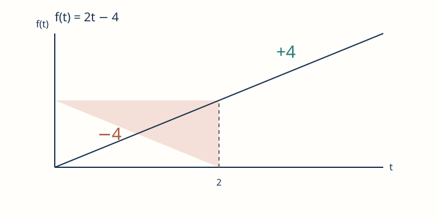
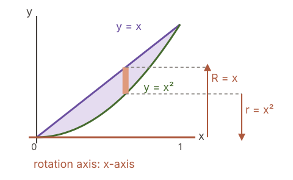
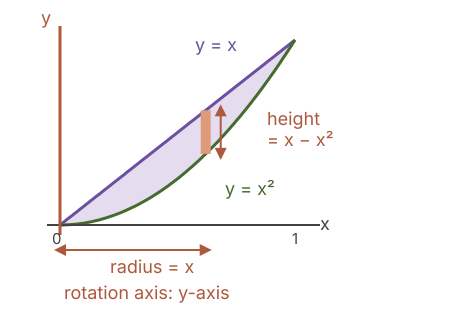
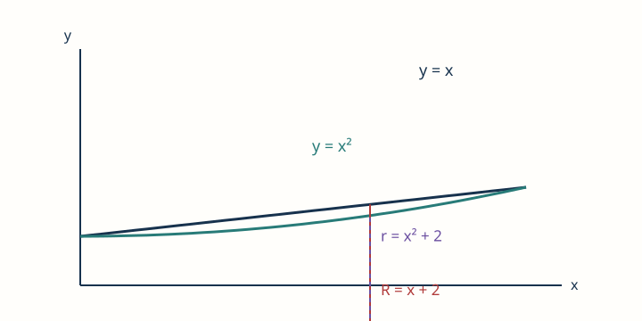
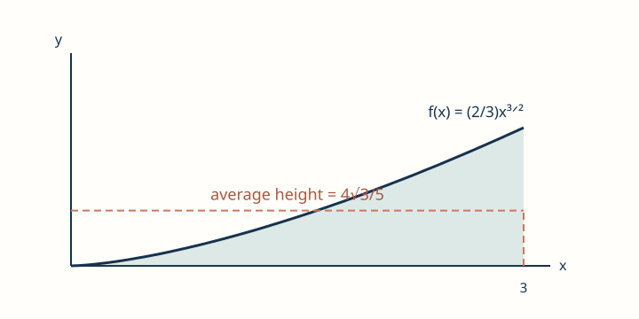
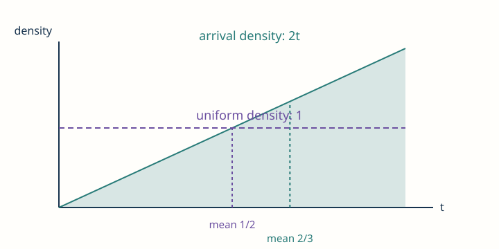

Related rates
A circular ripple has \(dr/dt=0.3\) m/s. How fast is its area changing when \(r=4\) m?
Show answerHide answer
\(A=\pi r^2\), so \(dA/dt=2\pi r\,dr/dt=2\pi(4)(0.3)=2.4\pi\ \mathrm{m^2/s}\).
Lessons 2–3 · 50 + 50 minutes
Three concept questions, four classroom exercises and a five-minute check on your own.
The derivative gives the instantaneous rate of change and the slope of the tangent. Its sign describes how the function changes on an interval where that sign holds.
A curve is continuous at a junction. Its left-hand slope there is \(2\) and its right-hand slope is \(5\). Is it differentiable at the junction? Give one reason.
A derivative at the junction would require the two one-sided slopes to agree. The slopes are different, so the derivative is undefined there.
| Idea | Main concept |
|---|---|
| Motion | Velocity \(v=s'\); acceleration \(a=v'\). |
| Linear approximation and Taylor polynomials | \(L(x)=f(a)+f'(a)(x-a)\); higher derivatives add higher-order terms. |
| Related rates | Differentiate a constraint with respect to time, then substitute the instantaneous data. |
| Extrema and curve shape | For absolute extrema on a closed interval, compare the function values at interior critical points and at both endpoints. At a critical point, \(f'=0\) or \(f'\) is undefined. Signs of \(f'\) and \(f''\) describe increase/decrease and concavity. |
| L’Hôpital and optimization | L’Hôpital addresses eligible indeterminate forms. Optimization compares critical points and feasible endpoints. |
| Mean Value Theorem | Under its hypotheses, some instantaneous rate equals the average rate. |
Integrating a rate gives net change. Differentiating an accumulation function recovers the rate at its moving endpoint. For continuous \(f\) with antiderivative \(F\), the Fundamental Theorem of Calculus gives both relationships.
Let \(A(x)=\int_a^x f(t)\,dt\) with \(f\) continuous. On an interval where \(f(x)<0\), is \(A\) increasing or decreasing? Explain using FTC.
Since \(A'(x)=f(x)<0\) on the interval, \(A\) is decreasing there.
| Object | Meaning |
|---|---|
| Indefinite integral | A family of antiderivatives: \(\int f(x)dx=F(x)+C\). |
| Definite integral | A number representing signed accumulation over an interval. |
| Accumulation function | \(A(x)=\int_a^x f(t)dt\), whose derivative is the integrand. |
| Net change | Signed contributions may cancel. |
| Total area or distance | Integrate \(|f|\), splitting at sign changes. |
| Variable limits | Combine FTC with the chain rule; a variable lower limit changes the sign. |
| Method | Structure to recognize | Main idea |
|---|---|---|
| Substitution | An inner function and its derivative | Reverse the chain rule. |
| Integration by parts | Products, logarithms, inverse trig | \(\int u\,dv=uv-\int v\,du\). |
| Trigonometric identities | Powers and products of trig functions | Rewrite before integrating. |
| Trigonometric substitution | \(a^2-x^2\), \(a^2+x^2\), \(x^2-a^2\) | Use a triangle and the matching identity. |
| Partial fractions | Rational functions | Factor the denominator, then decompose. |
| Numerical integration | Sampled data or difficult antiderivatives | Midpoint, trapezoid and Simpson rules approximate the integral; error bounds use derivative information. |
| Improper integrals | Infinite intervals or singularities | Replace the problematic endpoint by a limit. For example, \(\int_1^\infty x^{-p}dx\) converges when \(p>1\). |
Tables and CAS: differentiate the result and check the domain.
Choose a variable, identify the small contribution, and find the bounds. With vertical slices, for example, the product of a slice's height and its width gives a small area. Check the units of the contribution before integrating.
Water flows into a tank at rate \(q(t)\) litres per minute. What does \(q(t)\Delta t\) approximate? How would you find the amount added over the first five minutes?
The product approximates the litres added over a short interval of length \(\Delta t\). The amount added in five minutes is \(\int_0^5 q(t)\,dt\), in litres.
| Application | Contribution and integral |
|---|---|
| Area between curves | \(A=\int(\text{top}-\text{bottom})dx\) or \(\int(\text{right}-\text{left})dy\). |
| Washers | \(V=\pi\int(R^2-r^2)dx\), with both radii measured from the rotation axis. |
| Cylindrical shells | \(V=2\pi\int(\text{radius})(\text{height})dx\). |
| Arc length | \(L=\int_a^b\sqrt{1+(y')^2}dx\). |
| Average value | \(f_{\mathrm{avg}}=(b-a)^{-1}\int_a^b f(x)dx\). |
| Work, marginal cost and mass | Integrate force for work, marginal cost for the change in cost, or linear density for mass. |
| Center of mass | \(\bar x=\frac{\int x\rho(x)dx}{\int\rho(x)dx}\): a density-weighted average. |
| Probability | Density has total area \(1\); \(F(x)=P(X\le x)\); \(E[X]=\int x\,p(x)dx\); the median solves \(F(m)=1/2\). |
With the page out of view, write one line each on what a derivative measures, how to recover net change from a rate, and what you need to choose before writing a model as an integral.
Start each exercise on your own. Compare your reasoning with a partner, then open the answer. Use the hints in order if you get stuck. Tick a skill when you can do it without hints.
For \(x<1\), let \(f(x)=ax^2+3\); for \(x\ge1\), let \(f(x)=4x+b\).
Write two equations in \(a\) and \(b\) that make \(f\) continuous and differentiable at \(x=1\). Label the condition behind each equation.
Continuity requires \(a+3=4+b\). Differentiability then requires matching the two one-sided slopes, so \(2a=4\).
Is \(f'\) continuous at \(1\)? Does continuity of \(f'\) imply that \(f''(1)\) exists?
Let \(f(t)=2t-4\) and \(F(x)=\int_0^x f(t)\,dt\), for \(0\le x\le4\).
Sketch \(f\) and use the two regions to explain why \(F(4)=0\). Find the total area between the graph and the \(t\)-axis on \([0,4]\).

The signed contributions on \([0,2]\) and \([2,4]\) are \(-4\) and \(+4\), so \(F(4)=0\). The total area adds their magnitudes and equals \(8\).
Let \(G(x)=\int_{x^2}^{4}(2t-4)\,dt\). Use FTC to find \(G'(x)\).
For each integral, choose a method, name the feature that suggests it, and write your first step.
Start with \(\int_1^R x^{-p}\,dx\), then let \(R\to\infty\). Treat \(p=1\) separately.
A CAS returns a result involving the imaginary error function for \(\int e^{x^2}dx\). How does removing the factor \(2x\) affect the method? How can you check the CAS result?
Let \(R\) be the region between \(y=x\) and \(y=x^2\), for \(0\le x\le1\).
Rotate \(R\) about the \(x\)-axis. Sketch a vertical strip, label both radii of the washer it sweeps out, and write the definite integral for the volume.

On \([0,1]\), the outer radius is \(x\) and the inner radius is \(x^2\). The washer integral is \[V_x=\pi\int_0^1(x^2-x^4)\,dx.\]

Rotate \(R\) about \(y=-1\) and find the volume.
Use the same region between \(y=x\) and \(y=x^2\) on \([0,1]\). This time rotate it about \(y=-2\). Draw a strip, label the two radii measured from the new axis, and set up the washer integral.

Measure from \(y=-2\) to the upper curve for the outer radius \(R(x)\) and to the lower curve for the inner radius \(r(x)\). The bounds stay at \(0\) and \(1\).
For \(y=f(x)=\frac23x^{3/2}\) on \(0\le x\le3\):

Compare \(L\) with the straight-line distance between the endpoints. Then find \(c\in(0,3)\) for which \(f(c)=f_{\mathrm{avg}}\).
During one hour, a smooth model gives the arrival rate \(r(t)=6t\) thousand records per hour, \(0\le t\le1\).

Find the median arrival time and the probability that a randomly selected record arrived by \(t=1/2\).
Choose a clinic below or use the coverage map to revisit a topic.
A circular ripple has \(dr/dt=0.3\) m/s. How fast is its area changing when \(r=4\) m?
\(A=\pi r^2\), so \(dA/dt=2\pi r\,dr/dt=2\pi(4)(0.3)=2.4\pi\ \mathrm{m^2/s}\).
Evaluate \(\lim_{x\to0}(e^x-1-x)/x^2\).
The form is \(0/0\). Applying L’Hôpital twice gives \(\lim e^x/(2)=1/2\). Check the \(0/0\) condition at each application.
A rectangular garden uses a wall as one long side. The other three sides use \(40\) m of fence. Maximize its area.
Let the two perpendicular sides be \(x\), so the remaining side is \(40-2x\), \(0\le x\le20\). Then \(A=x(40-2x)\); \(A'=40-4x=0\) gives \(x=10\). The maximum area is \(10\cdot20=200\ \mathrm{m^2}\), with endpoint areas zero.
Use \(L(x)=f(a)+f'(a)(x-a)\) for \(f(x)=\sqrt x\) at \(a=9\) to estimate \(\sqrt{9.1}\).
\(L(x)=3+(x-9)/6\), so \(L(9.1)=3+0.1/6=3.016666\ldots\).
\(\int_0^{\pi/4}\tan x\,dx\)
\(\int\tan x\,dx=-\ln|\cos x|+C\), so the value is \(-\ln(\sqrt2/2)=\frac12\ln2\).
\(\int(1+x^2)^{-3/2}dx\)
Let \(x=\tan\theta\). Then \(dx=\sec^2\theta\,d\theta\) and \((1+x^2)^{3/2}=\sec^3\theta\), giving \(\int\cos\theta\,d\theta=\sin\theta+C=x/\sqrt{1+x^2}+C\).
\(\int 2/[x(x+2)]\,dx\)
\(2/[x(x+2)]=1/x-1/(x+2)\). The antiderivative is \(\ln|x|-\ln|x+2|+C=\ln|x/(x+2)|+C\), on an interval avoiding \(0\) and \(-2\).
Approximate \(\int_0^1(1+x^2)^{-1}dx\) and compare with the exact value.
With \(h=1/2\), \(S_2=(1/6)[1+4(4/5)+1/2]=47/60\approx0.783333\). The exact value is \(\pi/4\approx0.785398\), so the absolute error is about \(0.002065\).
A spring has \(k=12\) N/m. Find the work to stretch it from equilibrium by \(0.25\) m.
\(W=\int_0^{0.25}12x\,dx=6(0.25)^2=0.375\) J.
Fixed cost is \(100\) and \(C'(q)=20+0.6q\). Find \(C(50)\).
\(C(50)=100+\int_0^{50}(20+0.6q)dq=100+1000+750=1850\). The fixed cost must be added to the accumulated variable cost.
A vertical rectangular plate is \(2\) m wide and \(1\) m high; its top edge is \(1\) m below the surface. Use \(\rho g=9800\ \mathrm{N/m^3}\).
At local depth \(1+y\), a strip has area \(2\,dy\). Thus \(F=9800\int_0^1(1+y)2\,dy=29400\) N.
A rod on \([0,2]\) has linear density \(\rho(x)=1+x\). Find its center of mass.
Total mass is \(\int_0^2(1+x)dx=4\), and the first moment is \(\int_0^2x(1+x)dx=14/3\). Hence \(\bar x=(14/3)/4=7/6\), to the right of the uniform-rod midpoint \(1\).
Use the original lessons for more examples and targeted practice.
| Course material | Review location | Original lessons |
|---|---|---|
| Functions, limits, derivative rules and applications | Tasks 1–2; Clinic A | Chapter 3 · Chapter 4 |
| 5.1–5.4: sums, definite integrals, net change, FTC | Task 2 | 5.1–5.3 · 5.4–5.6 |
| 5.5–5.7: substitution, parts, additional techniques | Task 3; Clinic B | 5.7 |
| 5.8–5.10: tables/CAS, numerical integration, improper integrals | Task 3; Clinic B | 5.8–5.9 · 5.10 |
| 6.1–6.4: area, volume, shells, arc length | Tasks 4–5 | Area & slices · Washers & shells · Method & length |
| 6.5–6.8: average, physics, economics/biology, probability | Tasks 5–6; Clinic C | Average & work · Physical & economic models · Probability |